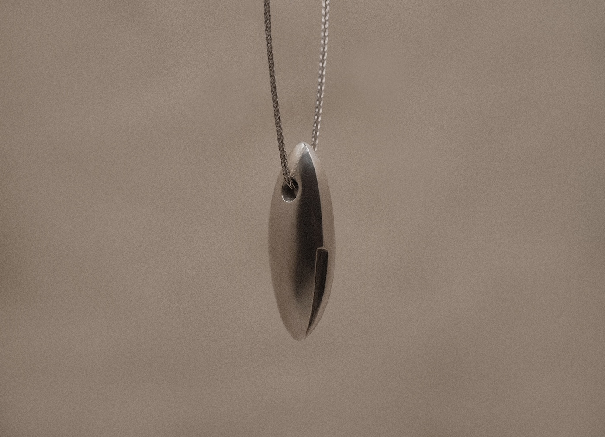
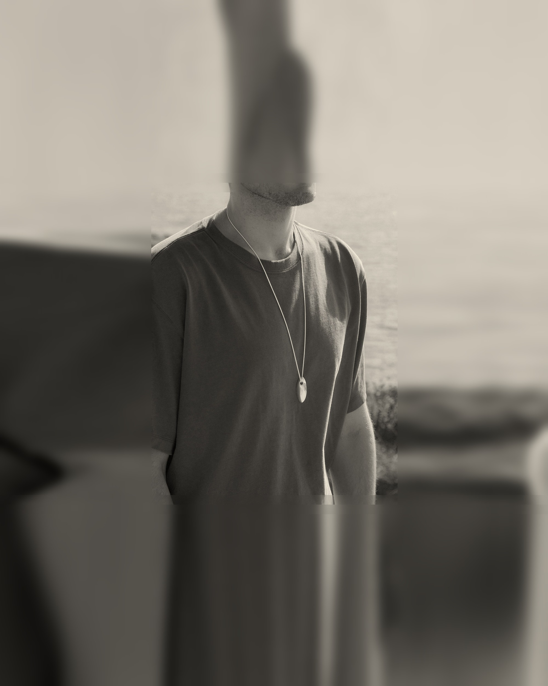
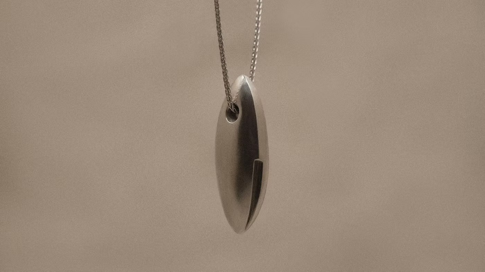

A Device of Stellar Origin
Starship Key
$460
Description
An elegant device of stellar origin, cast in sterling silver and worn on a thirty inch chain. Its form recalls a chrome starship. Prolonged exposure is known to cause wanderlust; researchers studying it take long sabbaticals abroad. Its hyper-reflective hull is polished meticulously by hand after casting.
Worn long, it rests just below the breastbone and turns with you as you move. Sterling silver darkens with time and air. Wear it often and it stays bright, or bring back the shine with a soft polishing cloth. Take it off to swim.
100% Sterling silver, 30" chain
- Chain
- 30 inches
- Dimensions
- to confirm
If your piece needs resizing, takes a knock, or needs adjusting, write to hello@studiomacon.co and we'll look after it.
Each piece is made to order. Please allow up to 10 business days for us to make yours before it heads out to you. Standard shipping takes 3–7 business days; international shipping generally takes 5–10. We accept pieces (excluding custom work) in their original condition for store credit toward your next purchase, within 14 days of delivery. If a piece doesn't fit, we'll gladly work with you to find the right size. Contact us to begin.
The Starship Key opens nothing that can be found on earth, which has never stopped anyone from trying. Worn close, it seems to hum faintly whenever the night sky is especially clear. Researchers who study it are rarely seen at their desks for long.
Every piece is made to order in our studio. Each begins as a sketch, is carved by hand in wax, and is cast at a local foundry before we refine and polish it. Please allow up to two weeks for us to make yours.